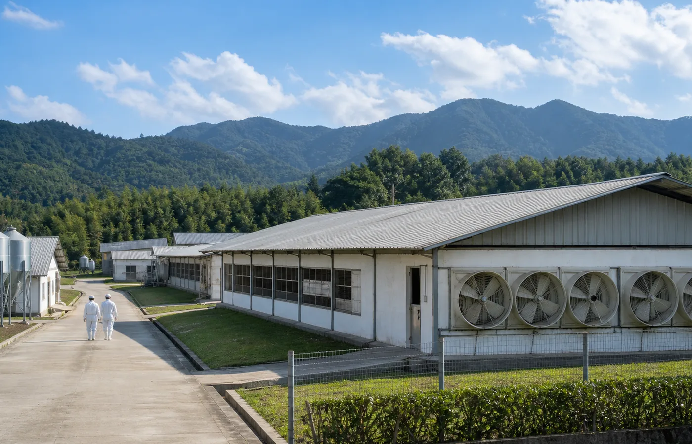

Source Genetics
種源育種
以自主品種配套系作為源頭管理基礎，透過統一育種標準穩定肉質、體型與出欄表現。對餐飲客戶而言，穩定品種意味著菜式口感、烹調損耗與成本估算更可控。
- 源頭品種標準化
- 穩定供應批次
- 支援產品規格規劃
Traceable Flow
以「公司 + 家庭農場」的規範化模式管理源頭：由公司統一制定標準，農戶按標準執行飼養；每一批次都由種苗、飼料、防疫、出欄、加工與冷鏈交付共同構成可追溯鏈路。
以自主品種配套系作為源頭管理基礎，透過統一育種標準穩定肉質、體型與出欄表現。對餐飲客戶而言，穩定品種意味著菜式口感、烹調損耗與成本估算更可控。
公司統一提供種苗及專用配方飼料，讓營養攝取、成長節奏及品質基準保持一致。這種集中供應方式降低了原料不穩定帶來的品質波動，亦方便後續按餐飲場景分級。

農戶按公司標準進行飼養執行，批次資料如飼料領取時間、餵食量、疫苗接種時間及出欄時間會進入系統記錄。這種資訊化管理令產品來源有跡可循，也讓供應鏈能更早預判交期與規格。

以科學化防疫流程及定期檢疫作為健康管理基礎，減低養殖過程中的突發風險。對 B 端採購而言，防疫與健康紀錄代表供應穩定度，亦是食安審核與品牌信任的重要部分。

產品由現代化屠宰、分割、熟食加工及冷鏈運輸銜接，從農場到餐桌維持溫度與時效控制。帝樂再把香港工場研發、調味與配送節奏接上，支援餐飲客戶減少後廚壓力。
出貨前按規格、包裝、溫控及批次紀錄進行把關，確保送到餐飲或零售客戶手上的產品能符合菜單及品牌要求。